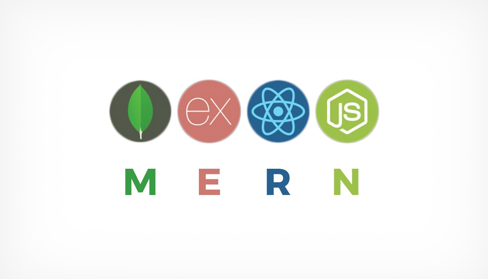

Why JavaScript?
JavaScript is a scripting language that supports cross-platform implementation. It also allows websites to be more complex it can do things upon clicking on a button, alerting and animate website. These are a few of its usual task, but you can do much more than this.
The server side of this language is Node.js which can allow users to create servers and add more functionality to websites. Some stacks depend on Node to work. One example would be the MERN stack since it is composed of MongoDb, Express, React and Node.js as its technologies.
